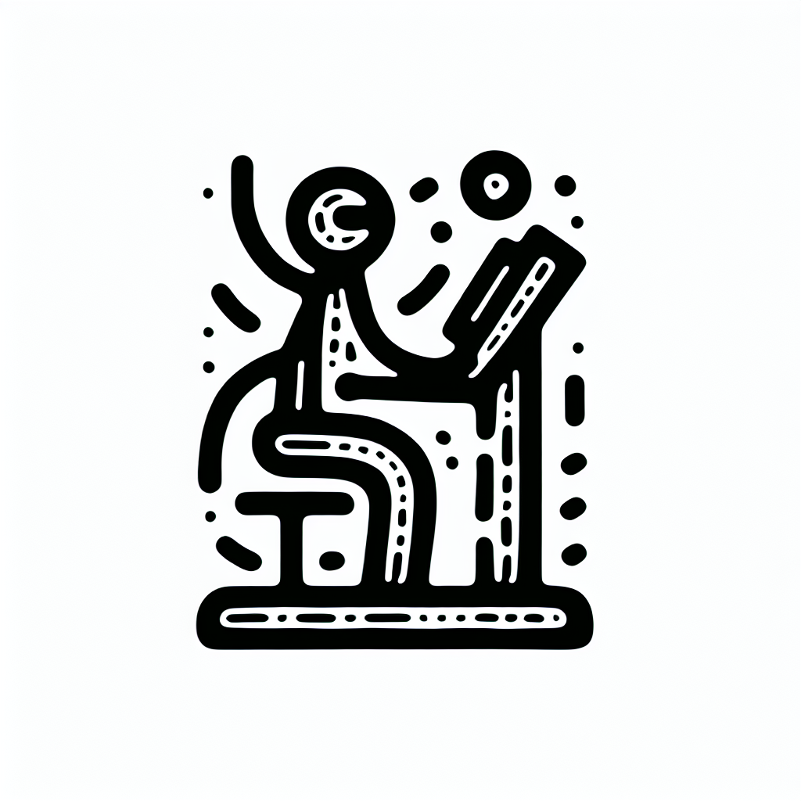

Renforcement du Core : pourquoi le Lagree est roi
Renforcement du Core : pourquoi le Lagree est roi
Sur la côte basque, la recherche de l'équilibre parfait entre bien-être physique et saveurs authentiques prend une nouvelle dimension chez DOZ à Anglet. Ici, la méthode Lagree s'impose comme la référence en matière de renforcement du "core", là où le sport rencontre l'authenticité. Pourquoi justement le Lagree est-il le roi du renforcement du core ? Suivez-nous pour une immersion dans cette pratique révolutionnaire.
Qu'est-ce que le core et pourquoi est-il si important ?
Avant d'explorer pourquoi le Lagree est si efficace, parlons un peu du "core". Dans le langage du fitness, le "core" désigne le complexe de muscles englobant la zone abdominale, le bas du dos et le bassin. Considéré comme le centre de gravité du corps, il joue un rôle crucial dans :
- La stabilité corporelle globale.
- La prévention des blessures, notamment au dos.
- L'amélioration de l'équilibre et de la posture.
- L'efficacité dans l'exécution des mouvements du quotidien et sportifs.
Le renforcement de cette région est donc essentiel pour un mode de vie actif et sain, d'autant plus dans l'univers dynamique du "healthy & surf" de notre belle région basque.
Le Lagree : une méthode unique pour un core solide
Chez DOZ, nous croyons fermement au pouvoir de la méthode Lagree, notamment grâce à l'utilisation de nos machines MegaPro. Mais qu'est-ce qui rend cette méthode si exceptionnelle ?
Le Lagree combine des mouvements lents et contrôlés avec une résistance adaptée, permettant de renforcer le core tout en ménageant les articulations. Voici quelques raisons pour lesquelles elle se démarque :
- Haute intensité sans impact : Parfait pour tous, des débutants aux athlètes aguerris.
- Engagement constant des muscles : Chaque exercice sollicite intensément le core.
- Amélioration rapide et visible : Des résultats notables avec seulement quelques séances par semaine.
- Un design de pratique contemporain : Des cours dans un environnement minimaliste et lumineux, favorisant la concentration et le bien-être.
Un combo gagnant : Lagree et alimentation saine
Chez DOZ, nous ne nous limitons pas à renforcer votre core. Nous croyons également à l'importance d'une alimentation qui soutient votre mode de vie actif. Notre Coffee Shop vous propose :
- Des plats sains, préparés avec des ingrédients locaux et de saison.
- Du café de spécialité torréfié avec soin, parfait pour revitaliser votre corps après une séance de Lagree.
- Un espace chaleureux où se retrouver et échanger, inspiré par notre philosophie 'Instant Brut'.
C'est cette combinaison de sport et de nutrition qui vous permet de profiter pleinement des bienfaits du Lagree sur votre core.
Pourquoi choisir DOZ pour votre renforcement du core ?
En plus de bénéficier de la méthode Lagree, choisir DOZ à Anglet, c'est faire le choix d'une expérience holistique :
- Un enseignement expert : Des coachs formés pour vous guider à chaque étape de votre progression.
- Un cadre inspirant : Profitez de l'architecture brute et minimaliste qui caractérise notre espace.
- Une communauté engagée : Rejoignez une communauté partageant les mêmes valeurs de bien-être et d'authenticité.
Conclusion : Unissez-vous à la révolution du core chez DOZ
Afin de découvrir par vous-même pourquoi le Lagree est roi dans le renforcement du core, nous vous invitons à réserver votre premier cours au Studio Lagree de DOZ dès aujourd'hui. Et pourquoi ne pas prolonger l'expérience autour d'un repas sain ou d'un délicieux café de spécialité dans notre Coffee Shop ? Venez vivre l'équilibre parfait entre effort et réconfort, unique à Anglet.
Ne tardez plus, prenez soin de votre core avec Doz, là où le sport et le plaisir se rencontrent harmonieusement.